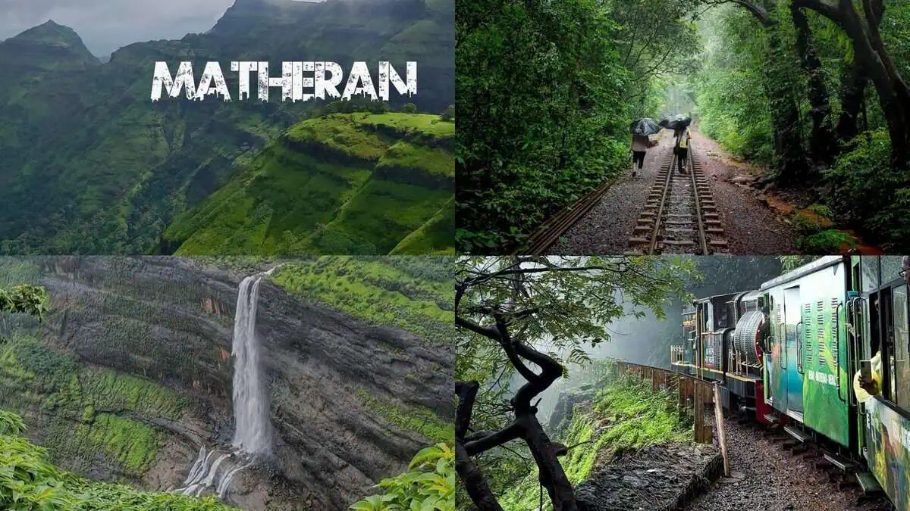
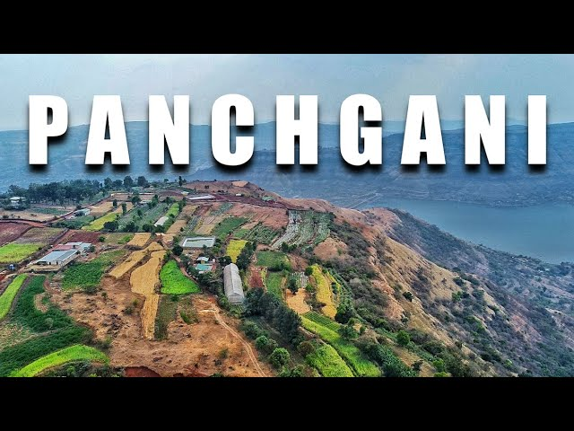

Matheran
Matheran is a budget-friendly hill station in Maharashtra known for its pleasant weather, scenic viewpoints, and vehicle-free environment. Visitors can enjoy toy train rides, nature walks, and beautiful sunsets while keeping travel expenses relatively low.

Lonavala & Khandala
Lonavala and Khandala are popular weekend destinations located near Mumbai and Pune. They offer affordable accommodations, waterfalls, caves, and viewpoints, making them ideal for families seeking a refreshing and economical getaway.

Panchgani
Panchgani is a peaceful hill station famous for its strawberry farms, cool climate, and scenic valleys. It provides comfortable lodging options and affordable sightseeing attractions such as Table Land and Sydney Point.